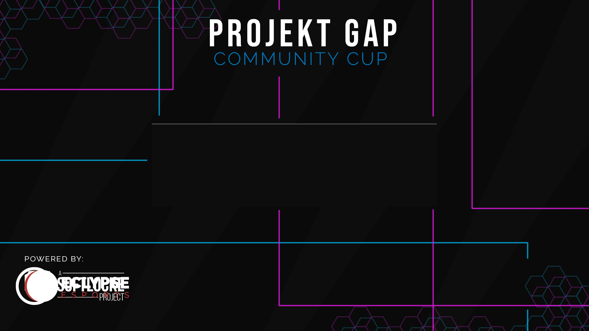

This first project is a bunch of assets used in a rebranding of an organization called Projekt Gap. Projekt Gap is focused on holding community tournements with cash prizes




These are samples of jerseys that I designed for various teams within EclYpse Esports.